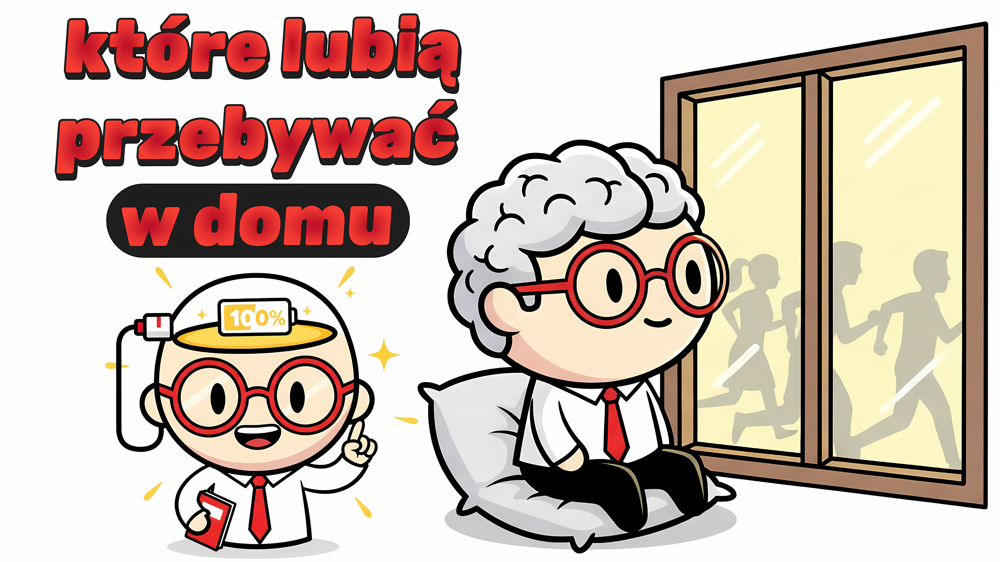

Zostawanie w domu: Głębsza psychologia introwersji

Poniższy tekst jest szczegółową transkrypcją i analizą materiału wideo opublikowanego na kanale Pan Umysł.
Wstęp: Światło na cichą psychologię
W dzisiejszym, hałaśliwym świecie, ciągłe wychodzenie i bycie widocznym często bywa mylone z sukcesem i szczęściem. Introwersja i chęć przebywania w domu (czyli cicha psychologia) są często stygmatyzowane jako fobia społeczna lub smutek. W tym filmie rzucamy światło na to, co skomplikowane i nieoczywiste w ludzkiej psychice, badając, dlaczego dla wielu dom jest psychologiczną twierdzą.
Dlaczego dom to strefa ładowania?
Wszyscy wychodzą. Każdy weekend — plany, zaproszenia, spotkania. Ale ty patrzysz na telefon, wymyślasz wymówkę i zamykasz drzwi. A w środku słyszysz ten głos: czy ja się dziwnie zachowuję? Może mam jakiś problem społeczny. Może uciekam. W tym filmie opowiem ci, co tak naprawdę dzieje się w mózgu osób, które wolą zostawać w domu. To nie jest fobia społeczna. To też nie jest objaw depresji. Wręcz przeciwnie — twój mózg wysyła ci bardzo konkretny komunikat i dziś go rozszyfrujemy.
Pomyśl o tym. Twoi znajomi idą na wielką imprezę, a ty wybierasz powrót do domu i czytanie książki albo oglądanie filmu. Ktoś pyta: „Czemu nigdy nie wychodzisz?" — i nie wiesz, co odpowiedzieć. Bo odpowiedź nie jest prosta. Ale to, co zaraz ci powiem, może być czymś, czego nigdy wcześniej nie słyszałeś. Nie jesteś zepsuty. Twój mózg działa inaczej.
W neurobiologii introwersja przez bardzo długi czas była źle rozumiana. Ludzie mylili ją z nieśmiałością, brakiem umiejętności społecznych, a nawet z aspołecznością. Tymczasem badania mówią zupełnie coś innego. Zgodnie z koncepcją, którą Carl Jung wprowadził w latach dwudziestych XX wieku i którą neurobiologia potwierdziła przez następne stulecie, mózgi introwertyków przetwarzają bodźce znacznie intensywniej. Każdy dźwięk z zewnątrz, każda twarz, każda rozmowa dociera do twojego mózgu jako znacznie silniejszy sygnał. A to przetwarzanie jest wyczerpujące. Dosłownie — biologicznie wyczerpujące.
Przyjrzyjmy się temu konkretniej. Kiedy badacze analizowali mózgi introwertyków i ekstrawertyków, odkryli uderzające różnice w aktywności kory przedczołowej. Mózgi introwertyków są bardziej aktywne nawet w stanie spoczynku. Więcej wewnętrznego głosu, więcej analizy, więcej ruchu w wewnętrznym świecie. Dla tych osób środowisko społeczne oznacza dodatkowe obciążenie zewnętrznym światem nałożone na i tak już aktywny świat wewnętrzny. I ich mózg podejmuje najbardziej racjonalną decyzję: wróć do domu, naładuj się.
Cisza a dopamina
Ale teraz dochodzimy do naprawdę interesującej części. Jeśli rozpoznajesz siebie w tym opisie, zastanów się: dlaczego po spotkaniu towarzyskim jesteś tak zmęczony? Dlaczego inni wychodzą pełni energii, a ty wychodzisz wyczerpany? Odpowiedź tkwi w równowadze dopaminy i acetylocholiny. Dla ekstrawertyków interakcje społeczne wyzwalają wydzielanie dopaminy — czują się dzięki temu energiczni i spełnieni. Ale chemia mózgu introwertyków działa inaczej. Dla nich głównym neuroprzekaźnikiem nagrody jest acetylocholina. Kiedy jest ona najbardziej wydzielana? Podczas myślenia, czytania, skupiania się na czymś w samotności. Dom nie jest dla ciebie miejscem ucieczki. To stacja ładowania twojego mózgu.
I to dokładnie łączy się z innym tematem, który poruszałem na tym kanale. W filmie o osobach, które nie publikują zdjęć w mediach społecznościowych, tłumaczyłem, dlaczego są one mniej uzależnione od pętli zewnętrznej aprobaty. Tam działał ten sam mechanizm: mózg mniej wrażliwy na pętlę dopaminową, bardziej nakierowany na nagrodę wewnętrzną. Znaczna część osób, które wolą zostawać w domu, to jednocześnie osoby unikające pojawiania się w mediach społecznościowych. To nie przypadek. To różne przejawy tej samej neurobiologii.
Społeczna presja i FOMO
Teraz muszę zadać ci pytanie. Pomyśl o wieczorze spędzonym w domu. Robisz coś, co lubisz — może czytasz, może słuchasz muzyki, może po prostu myślisz. Co wtedy czujesz? Wiele osób mówi: pełnię. Jakby brakujący element wskoczył na swoje miejsce. To nie przypadek. To znak, że twój mózg dostaje to, czego potrzebuje.
Ale co mówi ci społeczeństwo? Jesteś poza życiem towarzyskim. Czegoś ci umyka. FOMO — strach przed przegapieniem — celuje właśnie w takie osoby. A kiedy ten komunikat jest wystarczająco często powtarzany, zaczynasz go internalizować. Może problem tkwi we mnie. Może gdybym częściej wychodził, czułbym się lepiej. Ale nauka mówi ci: nie. Po prostu twój układ nerwowy działa inaczej — i wypisywanie złej recepty dla tego układu nerwowego sprawia, że czujesz się nie lepiej, ale gorzej.
Wybór czy ucieczka?
W tym miejscu muszę poczynić bardzo ważne rozróżnienie. Bo zostawanie w domu nie zawsze oznacza to samo. Niektórzy ludzie świadomie kochają przebywanie w domu. Samotność jest dla nich potrzebą, a gdy ta potrzeba jest zaspokojona, ich życie rozkwita. Ale dla niektórych historia jest inna. Chcą wychodzić, ale coś ich powstrzymuje. Lęk społeczny, przeszłe doświadczenie odrzucenia albo poczucie, że nie są wystarczająco dobrzy.
I te dwie sytuacje są od siebie zupełnie różne. Do której kategorii należysz? Czy kiedy jesteś w domu, naprawdę się ładujesz — czy może zostajesz w środku, bo nie możesz wyjść? Zadanie sobie tego pytania jest bardzo ważne. Bo pierwsze jest siłą, a drugie wymaga uwagi.
Jakość zamiast ilości
Zagłębmy się teraz nieco bardziej. Osoby lubiące zostawać w domu mają jedną wspólną cechę. Dla nich jakość jest znacznie ważniejsza niż ilość. Woleliby jedną głęboką rozmowę niż dwadzieścia powierzchownych. Nie na głośnej imprezie, ale przy małej kolacji w cztery, pięć osób mogą naprawdę być sobą. To nie jest słabość. Badania to potwierdzają. Głębokie relacje interpersonalne są jednym z najsilniejszych wskaźników psychicznego dobrostanu. A niektórzy ludzie znacznie łatwiej budują takie relacje w domowej atmosferze, w małych i bezpiecznych przestrzeniach.
Tutaj wkraczają badania Elaine Aron nad wysoką wrażliwością. Aron odkryła, że około 15–20% populacji przetwarza bodźce środowiskowe znacznie głębiej niż inni. Dla tych osób zatłoczone środowisko jest przytłaczające nie tylko społecznie, ale i sensorycznie. Hałas, światło, tłok — wszystkie te bodźce, które dla przeciętnego układu nerwowego są zwykłym szumem tła, dla układu nerwowego o wysokiej wrażliwości stanowią poważne obciążenie. Zostawanie w domu oznacza dla nich istnienie bez tego ciężaru.
Empatia a obciążenie poznawcze
Teraz chcę powiedzieć ci o najrzadziej omawianym, ale być może najważniejszym aspekcie tego tematu. Osoby lubiące zostawać w domu często myślą: może brakuje mi umiejętności społecznych. Może nie potrafię nawiązywać więzi z ludźmi. Ale badania mówią zupełnie coś innego. Osoby te mają zazwyczaj wyjątkowo głęboką zdolność do empatii. Bardzo dobrze czytają innych, wychwytują podteksty, rozumieją niuanse emocjonalne. I właśnie ta głębia sprawia, że powierzchowne środowiska towarzyskie są dla nich wyczerpujące. Bo kiedy wchodzisz w środowisko społeczne, nie tylko rozmawiasz. Przetwarzasz każdy gest, każdą zmianę tonu, każdy kontakt wzrokowy. To ogromne obciążenie poznawcze.
Być może najbardziej uderzające odkrycie naukowe jest następujące: silny związek między skłonnością do samotności a kreatywnością. Znaczna część najbardziej wpływowych myślicieli, pisarzy i naukowców w historii doświadczała głębokiej potrzeby samotności. To nie przypadek. W neurobiologii istnieje pojęcie sieci trybu domyślnego. Kiedy mózg jest oderwany od zewnętrznych bodźców — czyli dokładnie w warunkach domowych — ta sieć się aktywuje. Jest ona powiązana z myśleniem twórczym, introspekcją i łączeniem idei — z najwyższymi funkcjami poznawczymi. Cisza to nie pustka. Cisza to najgłębszy tryb pracy mózgu.
Podsumowanie: Głos mózgu czy głos rany?
Porozmawiajmy teraz o czymś bardzo konkretnym. Przychodzi zaproszenie towarzyskie. Widzisz wiadomość. Jaka jest twoja pierwsza reakcja? Jeśli wraz z „och, nie" przychodzi prawdziwa ulga — to wybór. Ale jeśli pojawia się napięcie, niepokój, walka „iść czy nie iść" — to już nie jest zwykła preferencja osobowościowa. To może wskazywać na obecność lęku społecznego, a te dwie rzeczy wymagają zupełnie innego podejścia.
Jak więc się rozpoznasz? Zadaj sobie kilka pytań. Czy kiedy jestem sam w domu, naprawdę się ładuję? Czy mam w życiu głębokie, wartościowe relacje? Czy kiedy wychodzę — na własnych warunkach — czerpię z tego przyjemność? Jeśli na te pytania możesz odpowiedzieć twierdząco, twój mózg działa dokładnie tak, jak jest dla ciebie odpowiednie.
Na koniec chcę powiedzieć jedno. Może ten film był ci bliski. Może od lat czułeś się zmuszony do obrony siebie. Dlaczego taki jesteś, dlaczego nie wychodzisz, dlaczego nie jesteś bardziej towarzyski. Ale chcę, żebyś wiedział: ekstrawersja to nie jedyny słuszny sposób na życie. Potrzeba ciszy, głębi, introwertycznego istnienia to nie jest brak. To po prostu inny układ nerwowy. I ten układ nerwowy, we właściwych warunkach, może tworzyć niesamowite rzeczy.